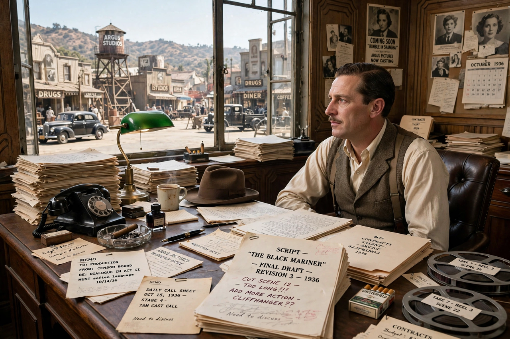

David O. Selznick (May 10, 1902 – June 22, 1965) was an American film producer and studio executive, best known as the producer of Gone with the Wind (1939), the highest-grossing film of its era and one of the most celebrated in Hollywood history. A famously hands-on producer whose voluminous memos became legendary, Selznick won two consecutive Academy Awards for Best Picture, for Gone with the Wind and Rebecca (1940).
| David O. Selznick | |
|---|---|
| Born | May 10, 1902, Pittsburgh, Pennsylvania |
| Died | June 22, 1965, Los Angeles, California |
| Occupation | Film producer, studio executive |
| Spouses | Irene Mayer Selznick; Jennifer Jones |
Selznick came from a film family — his father, Lewis J. Selznick, was a pioneering distributor and producer. After working at MGM and Paramount, he helped found RKO Pictures' production reputation in the early 1930s, then returned to MGM, where he produced prestige literary adaptations such as David Copperfield, Anna Karenina and A Tale of Two Cities.
In 1935 he founded his own company, Selznick International Pictures. Its productions included A Star Is Born (1937), The Prisoner of Zenda (1937) and the Civil War epic Gone with the Wind, made in association with MGM. The search for an actress to play Scarlett O'Hara became a national sensation before the role went to Vivien Leigh. In 1940 Selznick brought Alfred Hitchcock to Hollywood; their first film together, Rebecca, won the Best Picture Oscar, though their working relationship was often strained. Later Selznick productions included Spellbound (1945), Notorious (produced under his banner at RKO) and Duel in the Sun (1946).
Selznick's pace slowed in the 1950s; his last film was A Farewell to Arms (1957), starring his wife Jennifer Jones. His memos, collected posthumously in Memo from David O. Selznick (1972), remain a classic record of the studio-era producer's craft.
See also: Gone with the Wind (film)